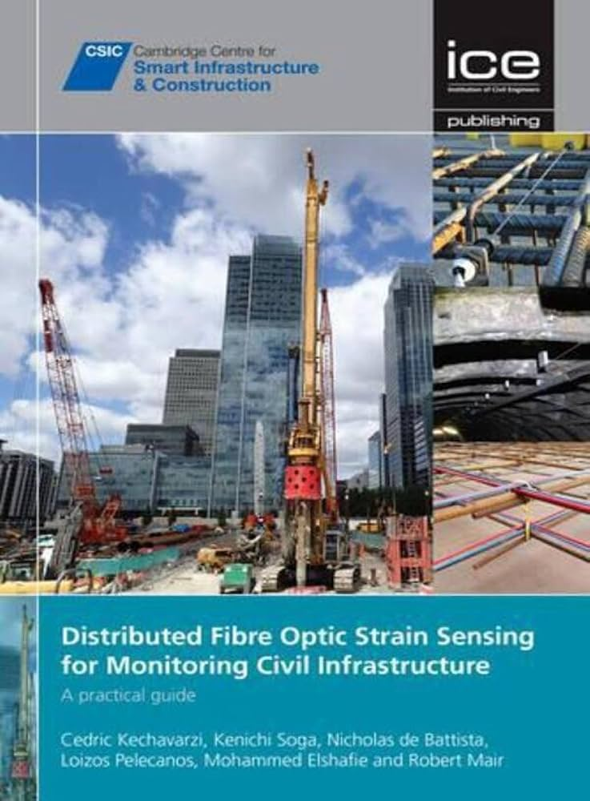

Selected bibliography
Publications across mechanics, infrastructure and data.
This page presents a representative cross-section of published work. For the complete and continuously updated record, use Google Scholar, ORCID or the University of Bath research portal.

Book
Distributed Fibre Optic Strain Sensing for Monitoring Civil Infrastructure: A Practical Guide
Kechavarzi, C.; Soga, K.; de Battista, N.; Pelecanos, L.; Elshafie, M. Z. E. B.; Mair, R. J. · ICE Publishing · 2016
A practical guide to distributed optical fibre sensing in civil engineering, covering sensing principles, system specification, installation, data processing and engineering interpretation, with real infrastructure case studies.
Earthquake engineering & dams
Nonlinear dynamics, dam-reservoir interaction, field evidence and numerical modelling of seismic response.
Pelecanos, L., Kontoe, S. & Zdravkovic, L. The effects of dam-reservoir interaction on the nonlinear seismic response of earth dams. Journal of Earthquake Engineering.
Pelecanos, L., Kontoe, S. & Zdravkovic, L. Dam-reservoir interaction effects on the elastic dynamic response of concrete and earth dams. Soil Dynamics and Earthquake Engineering 82, 138-141.
Pelecanos, L., Kontoe, S. & Zdravkovic, L. A case study on the seismic performance of earth dams. Géotechnique 65(11), 923-935.
Pelecanos, L., Kontoe, S. & Zdravkovic, L. Numerical modelling of hydrodynamic pressures on dams. Computers and Geotechnics 53, 68-82.
Kontoe, S., Pelecanos, L. & Potts, D. M. An important pitfall of pseudo-static finite element analysis. Computers and Geotechnics 48, 41-50.
Sensing, piles & inverse analysis
Distributed fibre-optic sensing, field monitoring and computational inference of pile response.
Yang, Y., Shin, G.-B., Pelecanos, L., Wang, C. C., Luo, L. & Soga, K. Inferring pile capacity using distributed strain sensing with PDE-constrained optimization. Computers and Geotechnics 196, 108131.
Shin, G.-B., Soga, K., Yang, Y., Pelecanos, L., Mevoli, F. A. & Yeskoo, A. Distributed fiber optic sensing for monitoring piles under eccentric load. ASCE Journal of Geotechnical and Geoenvironmental Engineering 152(9), 04026089.
Di Murro, V., Pelecanos, L., Soga, K., Kechavarzi, C., Morton, R. F. & Scibile, L. Long-term deformation monitoring of CERN concrete-lined tunnels using distributed fibre-optic sensing. Geotechnical Engineering Journal of the SEAGS & AGSSEA 50(2), 1–7.
Kechavarzi, C., Pelecanos, L., De Battista, N. & Soga, K. Distributed fibre optic sensing for monitoring reinforced concrete piles. Geotechnical Engineering Journal of the SEAGS & AGSSEA 50(2), 43–51.
Pelecanos, L., Soga, K., Elshafie, M. Z. E. B., De Battista, N., Gue, C. Y., Ouyang, Y. & Seo, H. J. Distributed fibre optic sensing of axially loaded bored piles. ASCE Journal of Geotechnical and Geoenvironmental Engineering 144(3), 04017122.
Pelecanos, L., Soga, K., Chunge, M. P. M. C., Ouyang, Y., Kwan, V., Kechavarzi, C. & Nicholson, D. Distributed fibre-optic monitoring of an Osterberg-cell test in London. Géotechnique Letters 7(2), 1-9.
Acikgoz, M. S., Pelecanos, L., Giardina, G., Aitken, J. & Soga, K. Distributed sensing of a masonry vault due to nearby piling. Structural Control and Health Monitoring 24(3), 1-19.
Offshore & marine engineering
Long-term cyclic response, soil-foundation interaction and hydrodynamic effects in offshore and marine infrastructure.
Williams, S., Pelecanos, L. & Darby, A. A practical two parameter model of pile-soil gapping for prediction of monopile offshore wind turbine dynamics. Géotechnique 74(3), 265-280.
Williams, S., Pelecanos, L. & Darby, A. A Winkler model of monopile ratcheting under long-term dynamic cyclic loading. Ocean Engineering 266, 112625.
Pelecanos, L., Kontoe, S. & Zdravkovic, L. Numerical modelling of hydrodynamic pressures on dams. Computers and Geotechnics 53, 68-82.
Sustainable design & optimisation
Embodied-carbon reduction, structural optimisation and computational decision support.
Monteiro, A. B. & Pelecanos, L. Comparative evaluation of optimization algorithms for truss shape design. Engineering Computations 43(6), 2492-2518.
Abushama, K., Hawkins, W., Pelecanos, L. & Ibell, T. Optimisation of embodied carbon and construction cost of concrete, steel and timber piles in different soil types with a case study. Developments in the Built Environment 22, 100656.
Abushama, K., Hawkins, W., Pelecanos, L. & Ibell, T. Embodied carbon optimisation of concrete pile foundations and comparison of the performance of different pile geometries. Engineering Structures 310, 118109.
Abushama, K., Hawkins, W., Pelecanos, L. & Ibell, T. Minimising the embodied carbon of reinforced concrete piles using a multi-level modelling tool with a case study. Structures 58, 105476.
Complete record
For the full bibliography and citation record.
The external profiles below are maintained as the definitive complete publication lists.